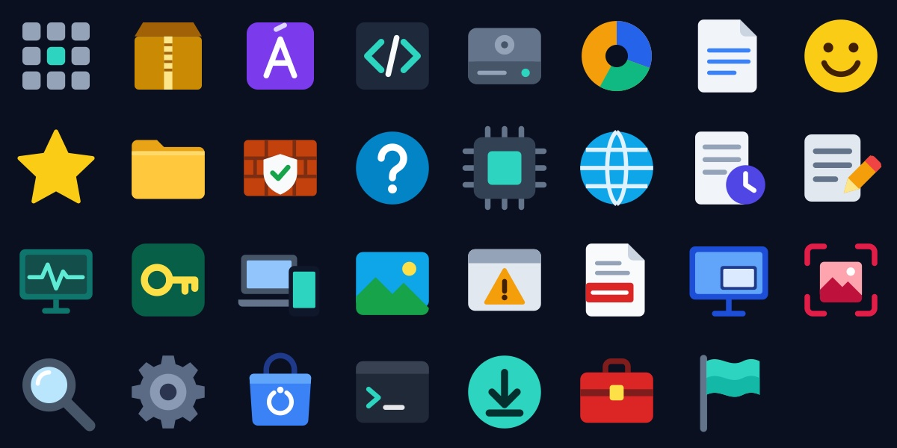
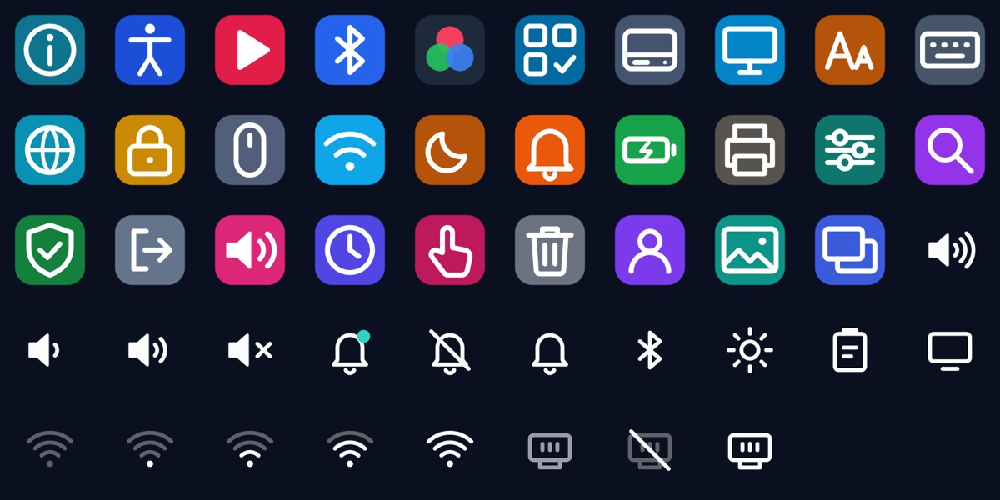

The parts you'll actually touch
From the first frame at power-on to the icon in the corner of the taskbar.
Start-up that writes itself
The name is drawn by hand as your PC starts, and the dot of the i drops into place. No scrolling text.
Update, your way
A real progress bar with megabytes and time left. Download now and restart later, or do both at once.
Go back in one click
Every earlier version is listed by name. Pick one and you are on it after a restart, with your files untouched.
A taskbar you control
Hide it, float it, move it, resize it. It always comes back on the home screen, and the bottom-right corner always takes you there.
Our own icons
Every built-in app and Settings page has an icon drawn for this system, in one consistent style.
Nothing sent anywhere
No usage tracking, no feedback pings, no account. The pages that would have sent data were removed.
Every icon drawn for this system
Apps get full-colour objects. Settings pages get coloured tiles. The taskbar corner gets thin line icons that stay calm.

